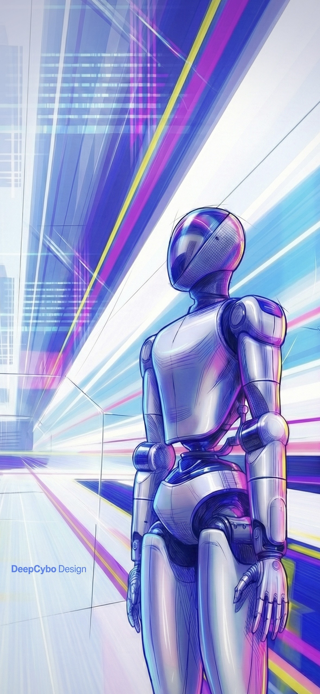

Portfolio Scope
Two robotics product stories
This site is organized as a personal portfolio rather than a single case study. It brings together two projects with different goals: one full-size humanoid platform and one interactive bionic product.
Haochen Liu
Embodied products, interaction, and physical presence.
This portfolio highlights two robotics projects with different scales and interaction goals. For DeepCybo Prime at DeepCybo, I drove the industrial design of a full-size humanoid robot from overall form language through packaging-aware 3D realization. For Xiao Nuo at Noetix Robotics, I designed the upper-body product expression of an interactive bionic robot focused on lifelike presence, screen-based communication, and human-facing emotional interaction.

Portfolio Scope
This site is organized as a personal portfolio rather than a single case study. It brings together two projects with different goals: one full-size humanoid platform and one interactive bionic product.
Project 01
A full-size humanoid robot where I handled form language, surfacing, CMF direction, packaging logic, and the path from presentation imagery to final built presence.
Project 02
An interactive bionic robot product centered on face perception, upper-body identity, and screen-supported emotional interaction for public-facing communication scenarios.
Project 01
A full-size humanoid robot project completed with DeepCybo, focused on turning a strong visual identity into a buildable machine with coherent proportions, shell logic, and final public presence.
01
This section follows the exact folder structure from my project archive. It gathers the clean real-world photography of the finished robot, including studio-style views, direct detail shots, and close-ups of the final build.
Featured Recognition
I was honored to see a robot I designed for DeepCybo, Prime, featured on the cover of The Journal of Physical Chemistry Letters (ACS). The cover image turns the robot into a scientific visual protagonist and extends the project beyond industrial design into a broader research and publication context.

02
This group comes directly from the `初期概念设计` folder and shows the earlier visual exploration stage: presentation renders, perspective studies, and concept images used before the final direction was locked.
03
This group follows the `3D-Model` folder and focuses on surfaced CAD, packaging-aware development, and the transition from concept images into buildable geometry.
04
This section follows the `与人合影` folder and shows DeepCybo Prime in exhibition, interview, and lab contexts. It includes team moments, public-facing scenes, and portraits with the robot.
05
This part keeps the project recognition material, including the journal cover feature that extended the project into a broader scientific communication context.
Project 02
At Noetix Robotics, I worked on the upper-body industrial design language shared across multiple bionic and interactive robot products. This section includes Xiao Nuo as an interactive humanoid communication product and Hobbs 3.0 as a producible bionic service robot, both carrying forward the torso and neck design system I developed.
06
Xiao Nuo is not just a form study. It is a real interactive product used for face-to-face communication, public demonstration, and emotionally expressive interaction. These images combine surfaced CAD, prototype photography, and public event scenes to show how the upper-body design supports friendliness, readability, and presence.
07
Hobbs 3.0 extends the same torso and neck design language into another product line. As you described it, Noetix Robotics Hobbs 3.0 is the world's first producible bionic service robot, featuring built-in cameras for eyes. It was displayed at the Appliance and Electronics World Expo in Shanghai, China.